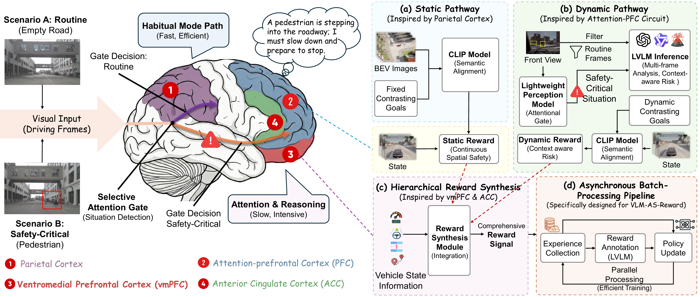
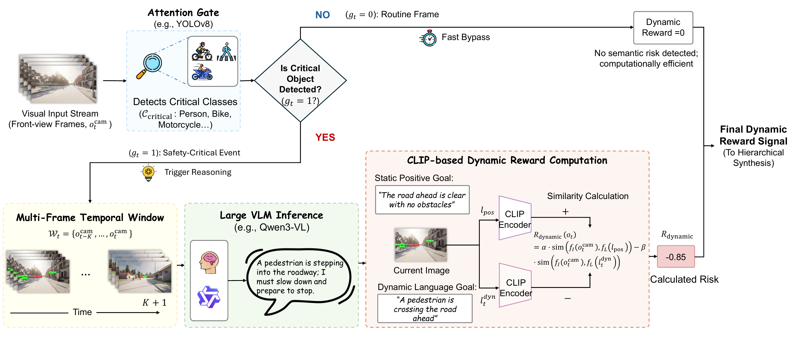
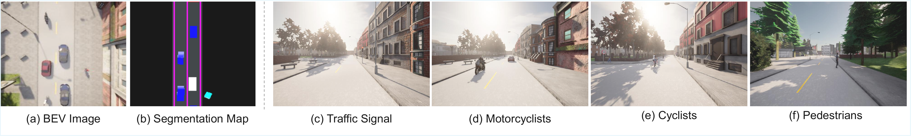

Neuroscience-Inspired Motivation

Routine scenes are handled by a fast habitual pathway, while safety-critical situations trigger selective attention and higher-level semantic reasoning in the prefrontal cortex, motivating DriveVLM-RL's dual-pathway reward design.
Framework Overview

(a) Static Pathway: CLIP-based semantic alignment with contrasting language goals for continuous spatial safety. (b) Dynamic Pathway: an attention gate triggers multi-frame LVLM reasoning only in safety-critical situations. (c) Hierarchical reward synthesis: static and dynamic signals are fused with vehicle-state factors. (d) Asynchronous pipeline: reward computation is decoupled from environment interaction and policy learning.
Attention-Gated Dynamic Reward

Routine frames bypass semantic reasoning; safety-critical frames trigger multi-frame LVLM inference to produce a risk description, which is converted into a dynamic reward via CLIP-based semantic similarity.
Multi-Modal Observations

Ego-vehicle observations in urban traffic: BEV representation, semantic segmentation, and camera views with diverse traffic participants.